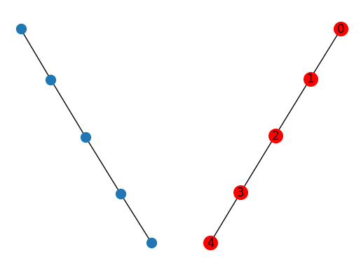
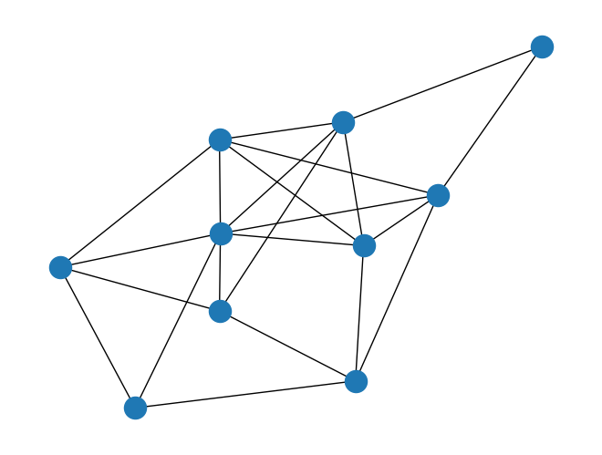
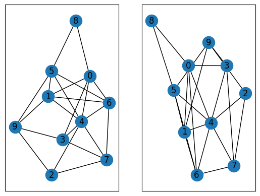
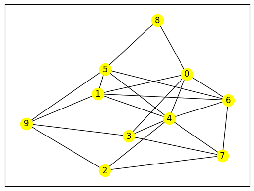

第14回 数理工学実験2#
15 シミュレーションとデータ解析#
ここでは，簡単なシミュレーションで得られたデータの解析を行う．シミュレーションを用いた研究を行う場合，しばしばシミュレーション時間に莫大な時間がかかり，その後のデータ解析にはそれほど計算時間がかからない場合がある．そのような場合には，シミュレーション結果を一旦ファイルへ出力し保存を行い，その後必要に応じてそのファイルを読み込みデータ解析を行う手順を取ることが多い．下記では単振動のシミュレーションを例に説明する．
\[
m \frac{\mathrm{d}^2 x}{\mathrm{d}t^2} = -kx
\]
上記は2階の線形常微分方程式なので，1階の2元連立1次の常微分方程式へ変換できる(簡単のため\(m=1, k=1\)とした)．
\[\begin{split}
\frac{\mathrm{d} x}{\mathrm{d}t} &= v \\
\frac{\mathrm{d} v}{\mathrm{d}t} &= -x
\end{split}\]
この式を初期条件\(t=0\)の時，\(x(0)=1, y(0)=0\)の下でオイラー法を用いて数値的に解く．
import numpy as np
import matplotlib.pyplot as plt
from math import *
def euler2(t0, x0, y0, a, b, f1, f2, n):
h=(b-a)/n
#print(h)
t=np.zeros(n+1)
x=np.zeros(n+1)
y=np.zeros(n+1)
t[0]=t0
x[0]=x0
y[0]=y0
#print(t0)
for i in range(0,n):
x[i+1] = x[i] + h*f1(t[i],x[i],y[i])
y[i+1] = y[i] + h*f2(t[i],x[i],y[i])
t[i+1] = t[i] + h
return t, x, y
def func1(t, x, y):
return y
def func2(t, x, y):
return -x
if __name__=='__main__':
t0=0
x0=1
y0=0
a=0
b=20
n=10000
t, x3, y3=euler2(t0,x0,y0, a,b,func1, func2, n)
print(t)
print(x3)
plt.plot(t,x3, marker=".", linestyle="", label="$x$")
plt.plot(t,y3, marker=".", linestyle="", label="$y$")
plt.xlabel('$t$')
plt.ylabel('$x(t)$')
plt.legend(loc='upper left')
plt.show()
[0.0000e+00 2.0000e-03 4.0000e-03 ... 1.9996e+01 1.9998e+01 2.0000e+01]
[1. 1. 0.999996 ... 0.42007117 0.41821177 0.41635069]
続いて，データの出力を行う．numpy，pandasのどちらにもデータの出力に関する関数（またはメソッド）が用意されているが，ここではnumpyで用意されている関数を用いることにする．
import numpy as np
import matplotlib.pyplot as plt
from math import *
def euler2(t0, x0, y0, a, b, f1, f2, n):
h=(b-a)/n
#print(h)
t=np.zeros(n+1)
x=np.zeros(n+1)
y=np.zeros(n+1)
t[0]=t0
x[0]=x0
y[0]=y0
#with open("euler02.txt", "a") as fp01:
for i in range(0,n):
x[i+1] = x[i] + h*f1(t[i],x[i],y[i])
y[i+1] = y[i] + h*f2(t[i],x[i],y[i])
t[i+1] = t[i] + h
# fp01.write("{} {} {}\n".format(t[i],x[i],y[i]))
return t, x, y
def func1(t, x, y):
return y
def func2(t, x, y):
return -x
if __name__=='__main__':
t0=0
x0=1
y0=0
a=0
b=20
n=10000
t, x3, y3=euler2(t0,x0,y0, a,b,func1, func2, n)
np.savetxt("../dat/euler01.txt",np.c_[t, x3, y3])
%cat ../dat/euler01.txt
続いてファイルを読み込み，グラフを出力する．
import numpy as np
import matplotlib.pyplot as plt
from math import *
data01=np.loadtxt('../dat/euler01.txt')
print(data01)
t=data01[:,0]
x=data01[:,1]
y=data01[:,2]
plt.plot(t,x, marker=".", linestyle="", label="$x$")
plt.plot(t,y, marker=".", linestyle="", label="$y$")
plt.xlabel('$t$')
plt.ylabel('$x(t)$')
plt.legend(loc='upper left')
plt.show()
[[ 0.00000000e+00 1.00000000e+00 0.00000000e+00]
[ 2.00000000e-03 1.00000000e+00 -2.00000000e-03]
[ 4.00000000e-03 9.99996000e-01 -4.00000000e-03]
...
[ 1.99960000e+01 4.20071168e-01 -9.29700263e-01]
[ 1.99980000e+01 4.18211767e-01 -9.30540405e-01]
[ 2.00000000e+01 4.16350686e-01 -9.31376829e-01]]
16 ネットワークの取り扱い#
Pythonを用いてネットワークを取り扱う最も有名なモジュールはnetworkxである．また，networkxより高速（100倍程度）なネットワークのモジュールとしてgraph-toolがある．ここでは，最も有名なnetworkxを使いネットワークに関する数値計算手法を学ぶこととする．
16.1 ネットワークモジュールnetworkxの基本的な使い方#
networkxではネットワークをグラフオブジェクトとして扱います．
import numpy as np
import networkx as nx
import matplotlib.pyplot as plt
nodelist01=np.arange(5) #ノードのリスト
edgeslist01=np.array([(0,1), (1,2), (2,3),(3,4)])
G01=nx.Graph()
G01.add_nodes_from(nodelist01)
G01.add_edges_from(edgeslist01)
subax1=plt.subplot(121)
np.random.seed(1)
nx.draw(G01, node_size=100)
subax2=plt.subplot(122)
nx.draw(G01, node_size=200, with_labels=True, node_color='red')

import numpy as np
import matplotlib.pyplot as plt
while True:
G03 = nx.fast_gnp_random_graph(10, 0.5, 1)
if nx.is_connected(G03):
break
np.random.seed(1)
nx.draw(G03)
#plt.plot()
nx.write_adjlist(G03, "../dat/test_adj.txt")
nx.write_edgelist(G03, "../dat/test_edge.txt", data=False)
np.savetxt("../dat/testG03_edge.txt", np.c_[nx.edges(G03)], fmt='%.0f')

import numpy as np
import networkx as nx
G04=np.loadtxt("../dat/test_edge.txt")
G04=G04.astype('int64')
G04=nx.from_edgelist(G04)
#print(nx.info(G04))
#print(G04.nodes)
G05=nx.read_edgelist("../dat/test_edge.txt")
#print(type(G05))
pos1=nx.spring_layout(G04, seed=1)
pos2=nx.spring_layout(G05, seed=2)
subax1=plt.subplot(121)
nx.draw_networkx(G04, pos1, with_labels=True)
subax1=plt.subplot(122)
nx.draw_networkx(G05, pos2, with_labels=True)

import numpy as np
import networkx as nx
import matplotlib.pyplot as plt
G06=nx.read_edgelist("../dat/test_edge.txt")
#ネットワーク情報
print(nx.nodes(G06))
print(nx.number_of_nodes(G06))
print(nx.edges(G06))
print(nx.number_of_edges(G06))
['0', '1', '3', '4', '6', '8', '5', '9', '2', '7']
10
[('0', '1'), ('0', '3'), ('0', '4'), ('0', '6'), ('0', '8'), ('1', '4'), ('1', '5'), ('1', '6'), ('1', '9'), ('3', '4'), ('3', '7'), ('3', '9'), ('4', '2'), ('4', '5'), ('4', '6'), ('4', '7'), ('6', '5'), ('6', '7'), ('8', '5'), ('5', '9'), ('9', '2'), ('2', '7')]
22
import numpy as np
import networkx as nx
import matplotlib.pyplot as plt
G06=nx.read_edgelist("../dat/test_edge.txt")
adj_mat=nx.adjacency_matrix(G06)
#print(adj_mat)
print(adj_mat.todense())
[[0 1 1 1 1 1 0 0 0 0]
[1 0 0 1 1 0 1 1 0 0]
[1 0 0 1 0 0 0 1 0 1]
[1 1 1 0 1 0 1 0 1 1]
[1 1 0 1 0 0 1 0 0 1]
[1 0 0 0 0 0 1 0 0 0]
[0 1 0 1 1 1 0 1 0 0]
[0 1 1 0 0 0 1 0 1 0]
[0 0 0 1 0 0 0 1 0 1]
[0 0 1 1 1 0 0 0 1 0]]
16.2 ネットワークを特徴づける統計量#
ここでは，ネットワークを特徴づけるいくつかの統計量を紹介する．
16.2.1 次数と次数分布#
import numpy as np
import networkx as nx
import matplotlib.pyplot as plt
G06=nx.read_edgelist("../dat/test_edge.txt")
print('Degree=', nx.degree(G06))
print(nx.degree_histogram(G06))
G06_deg=nx.degree(G06)
G06_deg=dict(G06_deg)
G06_deg=G06_deg.values()
plt.xlim(0,10)
#plt.hist(G06_deg, density=True, bins=10)
plt.bar(range(8), height=nx.degree_histogram(G06), width=1)
Degree= [('0', 5), ('1', 5), ('3', 4), ('4', 7), ('6', 5), ('8', 2), ('5', 5), ('9', 4), ('2', 3), ('7', 4)]
[0, 0, 1, 1, 3, 4, 0, 1]
<BarContainer object of 8 artists>
16.2.2 最短パスとネットワークの直径#
import numpy as np
import networkx as nx
import matplotlib.pyplot as plt
G07=nx.read_edgelist("../dat/test_edge.txt")
pos1=nx.spring_layout(G07, seed=1)
nx.draw_networkx(G07, pos1, with_labels=True, node_color='yellow')
plt.show()
print("shortest path between 8 and 7:", nx.shortest_path(G07, "8", "7"))
for p in nx.all_shortest_paths(G07, '8', '7'):
print('all shortest paths:', p)
print('shortest path length:', nx.shortest_path_length(G07, '8', '7'))
print('diameter:', nx.diameter(G07))

shortest path between 8 and 7: ['8', '0', '3', '7']
all shortest paths: ['8', '0', '3', '7']
all shortest paths: ['8', '0', '4', '7']
all shortest paths: ['8', '5', '4', '7']
all shortest paths: ['8', '0', '6', '7']
all shortest paths: ['8', '5', '6', '7']
shortest path length: 3
diameter: 3
16.2.4 グラフラプラシアン#
import numpy as np
import networkx as nx
import matplotlib.pyplot as plt
G09=nx.read_edgelist("../dat/test_edge.txt")
G10=G09.copy()
G10.remove_edges_from([('6','7'), ('4','7'), ('0','3'), ('3', '4'), ('9', '1'), ('9', '5'),('2', '4')])
L09=nx.laplacian_matrix(G09).todense()
L10=nx.laplacian_matrix(G10).todense()
print("L09:",L09,"\n\n","L10:",L10)
print("eigenvalue of L09:{}".format(np.round(np.linalg.eigvals(L09),6)))
print("eigenvalue of L10:{}".format(np.round(np.linalg.eigvals(L10)),6))
pos1=nx.spring_layout(G09, seed=1)
subax1=plt.subplot(121)
nx.draw_networkx(G09, pos1, with_labels=True)
subax1=plt.subplot(122)
nx.draw_networkx(G10, pos1, with_labels=True)
L09: [[ 5 -1 -1 -1 -1 -1 0 0 0 0]
[-1 5 0 -1 -1 0 -1 -1 0 0]
[-1 0 4 -1 0 0 0 -1 0 -1]
[-1 -1 -1 7 -1 0 -1 0 -1 -1]
[-1 -1 0 -1 5 0 -1 0 0 -1]
[-1 0 0 0 0 2 -1 0 0 0]
[ 0 -1 0 -1 -1 -1 5 -1 0 0]
[ 0 -1 -1 0 0 0 -1 4 -1 0]
[ 0 0 0 -1 0 0 0 -1 3 -1]
[ 0 0 -1 -1 -1 0 0 0 -1 4]]
L10: [[ 4 -1 0 -1 -1 -1 0 0 0 0]
[-1 4 0 -1 -1 0 -1 0 0 0]
[ 0 0 2 0 0 0 0 -1 0 -1]
[-1 -1 0 4 -1 0 -1 0 0 0]
[-1 -1 0 -1 4 0 -1 0 0 0]
[-1 0 0 0 0 2 -1 0 0 0]
[ 0 -1 0 -1 -1 -1 4 0 0 0]
[ 0 0 -1 0 0 0 0 2 -1 0]
[ 0 0 0 0 0 0 0 -1 2 -1]
[ 0 0 -1 0 0 0 0 0 -1 2]]
eigenvalue of L09:[0. 8.297566 1.611022 7.115235 6.387978 5.981041 4.774719 2.885318
3.255532 3.691588]
eigenvalue of L10:[-0. 4. 6. 5. 2. -0. 4. 5. 2. 2.]
16.2.5 次数相関#
import numpy as np
import networkx as nx
import matplotlib.pyplot as plt
G11=nx.read_edgelist("../dat/test_edge.txt")
print("assortativity of G09:{}".format(nx.degree_pearson_correlation_coefficient(G11)))
print("neighbor connectivity of G09:{}".format(nx.average_degree_connectivity(G11)))
assortativity of G09:-0.09261744966442956
neighbor connectivity of G09:{5: 4.9, 4: 4.666666666666667, 7: 4.428571428571429, 2: 5.0, 3: 5.0}